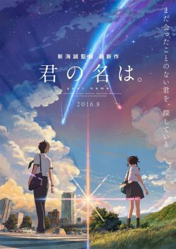

Your Name
Sinopsis
Mitsuha es una adolescente que detesta su vida rural en el campo. Por otro lado, Taki es un chico que vive en Tokio y sueña con ser un artista o un arquitecto. Los destinos de estos jóvenes se entrelazan la noche en que dos
estrellas caen del cielo, y comienzan a intercambiar sus cuerpos de la noche a la mañana. Con el pasar del tiempo
, desarrollan maneras de comunicarse entre ellos y un creciente anhelo de conocerse en persona.

Shrek 1
Sinopsis
Hace mucho tiempo, en una lejana ciénaga, vivía un ogro llamado Shrek.
Un día, su preciada soledad se ve interrumpida por un montón de personajes de cuento de hadas que invaden su casa. Todos fueron desterrados de su reino por el malvado Lord Farquaad.
Decidido a devolverles su reino y recuperar la soledad de su ciénaga, Shrek llega a un acuerdo con Lord Farquaad y va a rescatar a la princesa Fiona, la futura esposa del rey. Sin embargo, la princesa esconde un oscuro secreto.